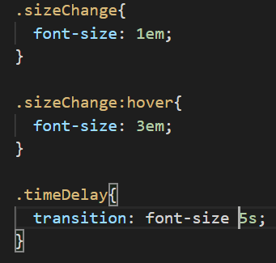
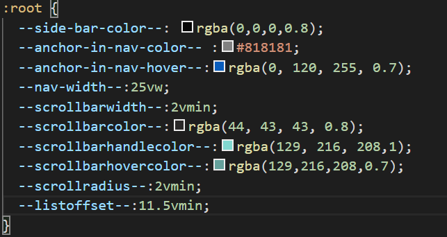

La grafica di una pagina html
Fino ad ora abbiamo imparato l'html la sua sintassi e i vari tag che possono essere usati per comporre una pagina.
In questa seconda guida vedremo come applicare elementi grafici alla pagina, cambiare colore ai comportamenti posizionare gli elementi e alla fine come rendere la nostra pagina più adattiva a qualsiasi ambiente(browser e mobile).
Ora che siamo arrivati a questo punto il tag che abbiamo cancellato dalla head ci servirà in quanto avverte il browser di usare come base delle sue misure la dimensione del browser. Andiamo nella head e scriviamo meta tra le varie opzioni scegliamo meta:vp e automaticamente scriverà una riga che avverte di considerare la larghezza del dispositivo per evitare di avere pagine in cui l'utente è costretto a muoversi non solo in verticale ma anche in orizzontale(posizionando male gli oggetti è comunque possibile costringere l'utente a dover fare scroll orizzontali).
Il linguaggio usato per aggiungere la sezione grafica è chiamato CSS , cascading style sheets, fogli di stile a cascata.
Cos'è il CSS
Il CSS è un linguaggio che definisce la componente di rendering della pagina, i CSS vengono definiti usando file di testo
con estensione .css.
Per vedere la lista di selettori esistenti con esempi aggiuntivi oltre alla guida andare a questa
pagina.
In un file css vengono specificate delle regole che permettono al browser di comprendere come i vari elementi di un documento html debbano essere mostrati all'utente.
Le regole css possono venire usate anche direttamente dentro un file html ma pensiamo per esempio di avere migliaia di paragrafi se usassimo le regole css dentro il documento html sarebbe necessario prendere singolarmente ogni elemento e mettere come attributo una proprietà definibile nei css. Se poi notassimo un errore dovremo correggere ogni punto in cui l'errore è definito. Usando i CSS è possibile creare una regola specifica per ogni paragrafo e in caso di modifica si può correggere in un solo punto risparmiando tempo e difficoltà nel cercare tutti i punti in cui la regola sarebbe stata replicata. Un altro motivo per usare i css è che possono venire usati da più pagine che hanno una struttura simile. pensiamo a pagine come amazon in cui quasi tutte le schermate hanno la stessa parte superiore.
è possibile separare componenti del css in file separati, per esempio si potrebbe avere un css per le parti comuni e un css per ogni pagina in cui sono presenti gli elementi non comuni questo aiuta anche la leggibilità in quanto separare regole con scopi diversi aiuta molto a comprendere gli obiettivi delle singole regole.
Per aggiungere dire al browser quali CSS usare per visualizzare il documento html si usa il tag link nel tag head del documento.
Basta scrivere link e selezionare link:css e modificare l'attributo href per farlo riferire al nostro file .css.
Avendo un nuovo tipo di risorsa nella nostra cartella progetto1 creiamo una nuova cartella chiamata CSS. Poi su visual studio code
clicchiamo su file->new file e poi su file-> save as e chiamiamo il file style e scegliamo nella tendina salva come CSS.
A questo punto nel nostro file html possiamo mettere assegnare ad href il valore "./CSS/style.css".
<link rel="stylesheet" type="text/css" href="./CSS/style.css">
La Sintassi del CSS
Un file CSS è formato da tanti blocchi definiti regole , ogni regola ha due componenti.
- I selettori
- Il corpo della regola
La prima componente formata da uno o più selettori definisce quali elementi dell'html vengono modificati dalla regola.
Il corpo della regola definisce le proprietà da assegnare agli elementi selezionati.
In questa guida impareremo come usare i vari selettori esistenti e a distinguere le varie proprietà che possono essere assegnate.
è possibile inoltre inserire commenti tra le varie regole , questo può essere comodo per indicare lo scopo delle regole o creare separatori
tra regole che hanno scopo diverso. La sintassi di un commento è
/* testo del commento */
I Selettori
I selettori sono la parte di una regola CSS che definisce su quali elementi la regola ha effetto.
I Selettori base
Il selettore più facile è il selettore di tag , questo selettore permette di applicare una regola ad ogni elemento
del documento html con un determinato tag. Il selettore di tag semplicemente è il nome del tag, per esempio per applicare
una regola a tutti i paragrafi(<p>) avremo come selettore p .
<nometag> è selezionato dal selettore nometag
Esistono altri due selettori base che si basano su due attributi speciali degli elementi html, si può selezionare un elemento per class o per id. Come già detto nella guida sull'html l'id è univoco mentre la class permette di avere più elementi con la stessa classe.
Per selezionare l'elemento con id="valoreid" si usa il selettore #valoreid
Per selezionare gli elementi con class="valoreclass" si usa il selettore .valoreclass
(il punto è quello che lo distingue dal selettore di tag)
Esistono inoltre il selettore multiplo e il selettore universale , il primo serve per selezionare
più elementi a cui assegnare la stessa regola potrei creare due regole con selettori diversi e corpo uguale,
oppure si può creare una lista dei selettori separati da virgola e scrivere il corpo della regola una sola volta.
scrivere le due regole
p Corpo della Regola
è equivalente a
.valoreClass Corpo della Regola
p , .valoreClass Corpo della Regola
Il selettore universarle serve per applicare ad ogni elemento una determinata regola. La sua sintassi è
* questo selettore seleziona ogni elemento
Perchè mai selezionare tutti gli elementi? In alcune occasioni risulta utile per esempio quando si vogliono
sovrascrivere valori di defaul del browser di spaziatura degli elementi, un altro utilizzo verrà mostrato nella prossima sezione.
L'ultimo selettore base che vediamo è il selettore di intersezione , quindi un selettore che seleziona elementi html che verrebbero selezionati
da più selettori contemporaneamente. è possibile formare tale selettore ponendo i vari selettori senza spazi tra loro,potendo avere un elemento
solo un tag e solo un id questo selettore di interesezione può essere composto da un numero arbitrario di classi e da massimo un selettore di tag e massimo un selettore di id.
Poniamo l'esempio di voler selezionare il seguente tag <p id="valID" class="cl1 cl2">. Alcuni dei selettori possibili sarebbero:
p#valID.cl1.cl2 ma sarebbe poco significativo, esiste solo un elemento con id=valID quindi il resto del selettore è sovrabbondante
p.cl1.cl2
.cl1.cl2
p.cl2
Spesso si usa un selettore formato da una lista di selettori per indicare parti in comune e poi per componenti specifiche di un elemento si può fare un altra regola. Un selettore usato per una regola può essere usato in qualsiasi altra regola senza restrizioni.
I Selettori gerarchici
Esistono dei selettori che sfruttano la gerarchia tra tag per selezionare gli elementi a cui applicare una regola. Alcuni di questi possono essere utili. Altri verrano trattati molto rapidamente in quanto raramente usati.
Cosa intendiamo per gerarchia tra tag.Immaginiamo il documento html generato da visual studio code con l'autocompletamento scrivendo html:5. Un tag contenuto in un altro tag possiamo definirlo figlio del tag che lo contiene. Per esempio head è figlio di html e anche body è figlio di html, i tag meta sono figli di head, quindi risultano nipoti di html. Un altra relazione che ci può servire è quella tra i due tag meta, essendo entrambi figli di head vengono definiti fratelli. Una volta compresa la gerarchia vediamo come è possibile selezionare elementi usando relazioni gerarchiche.
Per comporre un selettore gerarchico vengono usati due selettori che possono essere di base o a loro volta gerarchici.
Per presentare la sintassi useremo sel1 ed sel2 per rappresentare due selettori di base. Più avanti applicheremo selettori gerarchici
per comporre selettori gerarchici.
- Selettore di discendente(figlio,nipote etc)
elem1 elem2Seleziona gli elem2 discendenti di elem1 - Selettore di figlio
elem1>elem2Seleziona gli elem2 figli di elem1 - Selettore di immediato successivo
elem1+elem2Seleziona elem 2 fratello di elem1 ma immediatamente successivo ad elem1 - Selettore di successivo
elem1~elem2Seleziona elem2 fratello di elem1 in qualsiasi posizione successiva
Proviamo a capire che selettori sono questi.
-
p span
span discendenti di p
-
div>p
p figli di div
-
.cl1+p
p immediatamente successivi a tag con class="cl1"
-
#valID~.cl2
tag con class="cl2" successivi al tag con ID="valID"
-
article section>p
p figli di section , dove le section devono essere discendenti di article
O se letto nella direzione opposta, degli article seleziona le section discendenti e di queste seleziona i p figli
Abbiamo visto nell'ultimo esercizio una catena di selettori gerarchici. La composizione non è difficile però è raro che serva usare selettori gerarchici incatenati.
I selettori di pseudo classi
Cosa si intende per pseudo classi, possiamo indicare una pseudo classe come un attributo class che non viene impostato
dall'utente ma automaticamente dal browser nella sua struttura interna
Per esempio pensiamo ai link di una pagina web, se il link non è visitato normalmente lo vediamo in blu, se è stato visitato è in violetto
e se passiamo sopra col mouse su un link il suo colore cambia. Questo comportamento è dovuto ad un documento CSS interno al browser che definisce
il comportamento di una pagina in caso di mancata definizione di ulteriori regole a sovrascrivere. Però coi selettori visti fino ad ora non
ci è possibile selezionare un link a seconda del fatto che sia stato visitato o meno.
Il browser per ricordare questo tipo di informazioni assegna delle pseudo classi agli elementi.
Per esempio quando viene posizionato il mouse sopra un elemento questo ottiene oltre alle sue classi e al suo id una pseudo classe di nome
hover.
Ora vedremo i più tipici selettori di pseudo classe useremo elem,elem1 per indicare due generici selettori base o gerarchici.
- Selettore che seleziona l'elemento su cui il mouse è posizionato
elem:hover - Selettore link non visitati
elem:link - Selettore link visitato
elem:visited - Selettore che esclude degli elementi della selezione
elem:not(elem2) - Selettore che seleziona la zona selezionata dall'utente
elem::selection -
più complessi e/o che probabilmente non useremo
- Selettore di link mentre il mouse rimane cliccato sopra
elem:active - Seleziona tag senza contenuto:
elem:empty - Selettore della zona immediatamente dopo un tag:
elem::after - Selettore della zona immediatamente prima un tag:
elem::before
- Selettore di link mentre il mouse rimane cliccato sopra
Un primo sguardo alle proprietà
Vediamo ora la seconda parte di una regola css. La sezione di proprietà è un elenco di attributi che si possono assegnare ad uno o più elementi selezionati da un selettore.
La sintassi del corpo della regola è la seguente
{ Lista di proprietà }
La lista di proprietà è un elenco di elementi della seguente forma
nome proprietà : valore ;
Vediamo ora un esempio: Consideriamo questo span con id="spanExample"
Per avere questo risultato abbiamo inserito nel documento css la seguente regola
#spanExample{
Possiamo notare che andiamo a capo ad ogni proprietà questo ci aiuta a leggere ogni singola proprietà. Non
si è obbligati ad andare a capo, ma sicuramente aiuta la leggibilità e a trovare gli errori più velocemente.
Vediamo cosa facciamo in questa regola, selezioniamo un elemento con id spanExample.
Di questo scegliamo la proprietà color che indica il colore del testo e assegniamo il valore red, notiamo infatti il testo
rosso, la seconda proprietà è border-style che indica il contorno del blocco span (vediamo effettivamente che la forma di un
tag span è un blocco rettangolare che può essere spezzato quando va a capo), scegliamo come valore dotted cioè il bordo a punti.
Scegliamo poi una dimensione del font con font-size e scegliamo come dimensione del font 20px.
color:red;
border-style :dotted;
font-size:20px;
}
Vediamo adesso qualche esempio di valore che sarà approfondito qui.
Per i font , le dimensioni dei blocchi e spostamento di elementi si possono usare dimensioni in pixel quindi un numero con
px scritto dopo. Per esempio 13px , 27 px.
Per i colori ci sono diversi valori possibili , noi useremo due dei vari modi di specificare i colori,
i colori che si possono inserire usando il loro nome, quindi red, green , yellow etc.
L'altro modo che useremo per indicare i colori ci permette di essere più specifici indicando le varie componenti di un colore la sintassi è :
rgba(r,g,b,a)
Dove r , g e b sono indicano le componeti di colori primari rosso , verde e blu e possono avere valori tra 0 e 255,
a indica l'opacità del colore 0 per traparente , 1 per opaco e 0.5 per una via di mezzo.
Se in un documento css su visual studio code scriviamo rgba e usiamo l'auto completamento e all'interno sostiuiamo il contenuto con
0,0,0,0 e poi ci posizioniamo tra le parentesi tonde col mouse, uscirà fuori una piccola finestra da cui si può selezionare il colore manualmente.
Vediamo ora le principali proprietà che useremo.
- Colore dello sfondo
background-colorpuò assumere come valore qualsiasi colore - Immagine di sfondo
background-imageper definire che immagine usare per sfondo
si scrive url("url dell'immagine") per esempio ("./images/background1.png") - Dimensione dello sfondo
background-sizeI valori possibili sono larghezza altezzaper esempio 10px 20px; indica un immagine larga 10pixel e alta 20pixellarghezzaper esempio 10px; indica che l'immagine è larga 10px e l'altezza viene calcolata per mantenere le proporzioni dell'immaginecoverl'immagine viene adattata alla dimensione del bloccopercentuale percentualele dimensioni dell'immagine relative al contenitore.Se il tag che ha come sfondo l'immagine è grande 100px X 100px usando 50% 25%; avremmo un immagine di sfondo larga 50px e alta 25pxpercentualela larghezza è relativa al contenitore l'altezza è calcolata per mantenere le proporzioni dell'immagine (comodo se il blocco e l'immagini hanno proporzioni diverse)- Posizione dello sfondo
background-positionpuò assumere valori come left top, center center, right bottom -
Posizione relativa dello sfondo
background-attachment:fixedl'immagine non si muove con lo scroll dello schermolocall'immagine si muove con lo scroll
- Larghezza di un bordo
border-widthvalori in px - Stile del bordo
border-styleesempio con border-width:2px;border-style:dotteddottedesempiodashedesempiosolidesempiogrooveesempiodoubleesempioridgeesempioinsetesempiooutsetesempio
- Colore del bordo
border-coloraccetta un colore esempio con border-color:red;boder-style:solid; - Bordi arrotondati
border-radiusaccetta dimensioni in px esempio con border-radius:10px;boder-style:solid; - Non consigliato.Cursore mouse personalizzato
cursorpuò avere una lista di file immagine(più piccoli di 32px X 32px) preferibilmente in formato .cur
url(percorso file1.cur) ,url(percorso file2.cur), auto - Raramente utile.Direzione del testo
directionpuò avere i valoriltrortl
ltr sta per left to right, rtl sta per right to left. - Forzare un posizionamento di un elemento
float
esempio di float:right Gli elementi successivi occupano lo spazio intorno all'elemento;
Se vogliamo che gli elementi successivi vadano dopo l'elemento con float usiamoclearcon valori left oppure right oppure both, Questo praticamente dice al browser di ignorare i float:left,float:right o entrambi da quel momento. Si può usare la pseudo classe ::after per assegnare il float e toglierlo subito dopo esempio
- Font-family del testo
font-familyesempio in sans-serif
La lista di font utilizzabili direttamente senza altri accorgimenti che non vedremo possono essere trovati qui. - Dimensione dei caratteri
font-sizeesempio con font-size:15px; - Stile del testo
font-styleValori possibili:italicesempioobliqueesempio
- Peso del font
font-weightValori possibili:lighteresempionormalesempioboldesempiobolderesempio
- Allineamenteo del testo
text-alignpuò avere i valorileftrightjustifycenter
- Ombra del testo
text-shadowIl valore da assegnarli èspostamentoorizzontale spostamentoverticale coloredove gli spostamenti sono in px e il colore può essere qualsiasi colore
esempio con text-shadow: 12px 12px red
Normalmente andrebbe usato un colore con trasparenza maggiore per l'ombra. Ma causando spesso problemi agli occhi ho preferito usare un colore opaco e spostare molto l'ombra. - Altezza di un blocco
heightaccetta altezze in px o una percentuale(relativa al blocco che lo contiene) - Larghezza di un blocco
widthuguale a height - Altezza minima(massima) del blocco
min-height(max-height) dimensione in pixel - Larghezza minima(massima) del blocco
min-width(max-width) dimensione in pixel - Gestione contenuto che sfora dal blocco
overflowusare overflow:auto; per far apparire una sparra per poter scorrere il contenuto senza far sforare il contenuto dal blocco. - Rendere lo scroll della pagina(quando si clicca un link) più lento
scroll-behavior: smooth;
Per continuare l'analisi delle proprietà ci serve capire come funziona il sistema a blocchi del css. Nell'html noi definiziamo un tag e il suo conenuto. Ai fini della presentazione ad ogni blocco possiamo associare delle cornici al contenuto, per ora abbiamo visto il border che è una delle cornici , il border è impostato a 0px dal browser se non è specificato. Gli altri hanno valori definiti dal browser se non sovrascritti nel css. Questo è un esempio di componente del browser che rende diverso l'aspetto di una pagina da un browser all'altro in presenza di solo html.

Le dimensioni di padding e margin servono per posizionare i blocchi e i bordi dei blocchi nella pagina.
Alcuni sviluppatori per decidere manualmente i padding e margin quando necessari pongono all'inizio di un file css
la regola
*:not(ul):not(ol){
Che pone a tutti gli elemnti che non siano liste il margine e il padding a 0.
margin:0px;
padding:0px;
}
Guardiamo ora attributi che ci possono servire:
- Dimensionamento di width,height
box-sizingindica relativamente a che box sono da calcolare width e heightborder-boxse si vuole considerare contenuto, margine e padding,content-boxse si vuole calcolare solo relativamente al contenuto -
Dimensioni margin in pixel
margin-seguito dal lato che si vuole modificare (top,left,bottom,right), dimensioni specificate in pixel. -
Dimensioni padding in pixel
padding-come margin qui sopra (top,left,bottom,right)
Oltre a questi abbiamo dei tag per definire il posizionamento dei blocchi, è possibile posizionare blocchi in modo
relativo e in modo assoluto. La proprietà da usare è position con i possibili valori che vedremo relative
e absolute. Se viene usata questa proprietà è possibile usare 2 proprietà per posizionare il tag:
Leftquesta proprietà indica di quanti pixel dev'essere spostato a sinistra un elemento. In caso position sia absolute, questo sarà lo spostamento rispetto al bordo sinistro del browser, nel caso relative invece viene considerato come lo spostamento rispetto a dove sarebbe stato posizionato senza una proprietà positionTopfunziona nello stesso modo di left solo che gli spostamenti sono in verticale verso il basso
Esiste un'altro possibile valore di position che è position:sticky viene usato per creare quelle sbarre superiori nei siti Che
inizialmente si spostano con la pagina ma poi rimangono fisse in cima alla pagina. Noi non trattiamo il tema,
qui si può trovare un esempio
del codice per ottenere questo risultato.
Uno sguardo più approfondito alle proprietà
Fino ad ora abbiamo osservato diverse proprietà e valori che queste possono assumere. Ci saremo resi conto che molte di queste proprietà danno un comportamento fisso e per esempio se in un componente che è strutturato a tabella dovessimo aggiungere un nuovo componente potremo trovarci a dover modificare tutto il css relativo al posizionamento, se cambiassimo schermo le misure calcolate in pixel potrebbero non essere adatte, soprattutto per la portabilità su dispositivi mobile. In questo capitolo affronteremo le proprietà che ci permettono di risolvere parzialmente questi problemi e affronteremo anche le basi delle trasformazioni degli elementi al cambiare delle loro pseudo classi.
Dimensioni relative
Ovunque possa essere usato una dimensione in pixel è possibile usare le dimensioni relative, possiamo immaginare che il browser in presenza di una dimensione relativa sappia fare la traduzione automatica in pixel. Esistono diversi tipi di dimensioni relative in CSS:
- Dimensione relativa al font attuale: unità di misura
em
Usa la dimensione attuale del font fornita dal browser, 2em per esempio significa 2 volte il font che avrebbe messo il browseresempio font 2 em - Dimensione relativa al font della radice del documento: unità di misura
rem
Usa la dimensione attuale del font fornita dal browser, 2rem per esempio significa 2 volte il font che avrebbe messo il browser per un testo nel body non incluso in alcun tagesempio font 2 rem - Dimensione relativa alla larghezza attuale del browser
vw
Può avere valori tra 0 e 100 indica una parcentuale della larghezza della finestra del browser.
Se indichiamo 2vh come dimensione del font significa che la scritta avrà un font tale da essere grande il 2 percento dell'altezza della finestra;
Suscettibile al ridimensionamento della finestra del browser.
esempio font 2 vw - Dimensione relativa all'altezza attuale del browser
vw
Può avere valori maggiori di 0 indica una parcentuale dell'altezza della finestra del browser.
Suscettibile al ridimensionamento della finestra del browser.
esempio font 2 vh - Dimensione relativa alla minore tra altezza e larghezza del browser
vminesempio font 2 vmin - Dimensione relativa alla maggiore tra altezza e larghezza del browser
vmaxesempio font 2 vmax
Ora proviamo a ridimensionare il browser , vedremo che gli esempi delle ultime 4 misure relative cambiano mentre i primi due non cambiano.
Se invece cambiamo lo zoom della pagina(non lo consiglio ora perchè per il tanto testo la pagina zoomata sposta l'utente) vedremo che cambieranno i primi 2 ma non gli ultimi 4.
Ora consideriamo in cosa usare le prime 2 unità relative in cosa usare le altre 4.
Un testo quando un utente modifica lo zoom dovrebbe subire gli effetti dello zoom che spesso è usato per mancanza di leggibilità.
è quindi importante usare come misure em o rem per le dimensioni dei testi.
Le altre 4 vengono usate per fissare un layout dei componenti della pagina, per esempio una sbarra laterale larga sempre il 20% dello schermo avrà
width:20vw;. è importante usare bene le unità di misura relative per creare interfacce reattive alle variazioni del browser.
Flex box
Per poter parlare di flex, che possiamo definire uno strumento del CSS per creare tabelle che si adattano agli schermi ,
dobbiamo prima vedere una proprietà display di CSS che viene usata per definire come l'elemento dev'essere
mostrato a schermo. Noi vediamo solo 4 dei possibili valori che questa proprietà può assumere.
inline Il tag non viene posizionato a capo rispetto al tag precedente.
block Il tag viene messo a capo e occupa l'intera larghezza del documento se non specificato altrimenti.
Non da approfondire contents Il tag in sparisce dal flusso del documento e il suo contenuto diventa contenuto del tag padre.
flex Il tag diventa un contenitore flessibile.
In questo capitolo ci concentreremo parlando del caso display:flex;
Una volta definitio un blocco con display:flex dobbiamo indicare la direzione in cui vogliamo che gli elementi vengano posizionati
con la proprietà flex-direction che può assumere i valori row,row-reverse,column,column-reverse che permetteranno di posizionare
gli elementi interni rispettivamente da sinistra a destra, da destra a sinistra, dall'alto in basso, dal basso in alto.
Un'altra proprietà importante è flex-wrap che definisce il comportamento in caso il contenitore diventi meno largo del contenuto
i valori principalmente usati sono wrap che mantiene il direzionamento degli elementi(row per esempio) e nel caso di flex direction row
li porta alla riga successiva.
In presenza di un contenitore flex i tag che ne subiscono l'effetto sono solo i figli e non tutti i discendenti.
Vediamo in particolare quali proprietà dei tag figli di un tag con display:flex possono avere,queste proprietà funzionano quando gli elementi non sforano
in caso sforino il comportamento cambia:
flex-basisaccetta una misura in pixel ed indica la dimensione del blocco relativamente alla flex-direction
Se la direzione è orizzontale(row,row-reverse) allora flex-basis indica la larghezza dell'elemento, in caso contrario l'altezza.flex-growIndica in caso di presenza di spazio quanto più largo/alto sarà l'elemento rispetto agli altri elementi flex-grow:2; indica che l'elemento sarà largo il doppio degli altri(se il padre ha flex-direction-row).flex-shrinkIndica in caso di presenza di spazio quanto più stretto/basso sarà l'elemento rispetto agli altri elementi flex-shrink:2; indica che l'elemento sarà largo il doppio degli altri(se il padre ha flex-direction-row).justify-contentIndica come vengono giustificati gli elementi all'interno del contenitore.
Può avere i seguenti valori :flex-startGli elementi vengono posizionati dall'estremo di partenza della flex box. Dipende dalla proprietà flex-direction. In caso fosse row, sarebbe l'angolo in alto a sinistra, in caso fosse row-reverse sarebbe l'angolo in alto a destra.flex-endCome flex-start ma la partenza è la coordinata opposta rispetto al contenitore nella direzione di flexcenterPosiziona gli elementi in modo che siano centrati rispetto al contenitore che li contiene relativamente alla direzione di flex.space-betweenPosiziona gli elementi in modo che siano equidistanti tra loro nella direzione di flex.space-aroundP osiziona gli elementi in modo che siano equidistanti tra loro nella direzione di flex e siano equidistanti anche rispetto ai bordi della flex-box.
Trasformazioni con pseudo selettori
Fino ad ora abbiamo visto come modificare una pagina reagendo al ridimensionamento e allo zoom per mantenere la pagina
più adattiva possibile.
Però come possiamo modificare la visualizzazione di un elemento al variare del comportamento dell'utente.
Il metodo più semplice senza usare codice è creare regole CSS , una per l'elemento con le caratteristiche normali,
si aggiungono poi regole per lo stesso elemento ma con l'aggiunta della pseudo classe.
Testo che si ingrandisce
Testo che si ingrandisce lentamente
Le regole usate sono

L'attributo usato per avere una transizione tra due stati è transition
il valore assegnato a questo parametro sono il nome del parametro che viene modificato(dalla regola con :hover in questo caso)
e il tempo in secondi che indica quanto dura la transizione.
Il pprimo testo non avendo la classe timeDelay effettua la transizione in modo immediato.
è possibile specificare più transizioni separandole con la virgola, per esempio in caso avessimo regole che modificano sia font-size che larghezza(width)di un elemento
potremo scrivere una transizione regola come transition: width 2s, font-size 5s; così facendo la larghezza cambierebbe in 2 secondi
e la dimensione del font in 5 secondi.
Si può utilizzare la proprietà transition-delay con un valore in secondi per indicare un ritardo con cui parte la transizione.
Oltre alle transizioni esistono anche le trasformazioni.
Queste indicano transformazioni geometriche di un tag rispetto alla pagina, possono essere molto complesse e possono essere rallentate
usando il parametro transition.
Le trasformazioni possibili per esempio sono rotazioni del blocco rispetto agli assi x , y e z.
Per una guida rapida si consiglia di vedere questa pagina.
Cosa si intende per ereditarietà
In CSS non è obbligatorio specificare regole per ogni singolo elemento.
Cosa succcede alle proprietà che non abbiamo assegnato.
Alcune vengono impostate dal browser con dei valori di default.
Altre proprietà vengono invece ereditate.
Per esempio se noi impostassimo la proprietà color ad un article, tutti i tag
discendenti avrebbero color con lo stesso valore a meno che una regola non specifichi
altrimenti.
Gli attributi riguardanti lo stile del testo vengono ereditati, gli attributi
che vanno a modificare la struttura dei blocchi non vengono ereditati, quindi se impostiamo padding , border
o margin ad un elemento i suoi discendenti non erediteranno queste proprietà.
Per le proprietà è possibile specificare esplicitamente di ereditare la proprietà dal blocco padre,
a prescindere dal tipo di proprietà , usando come valore inherit che va a
dire al browser di assegnare lo stesso valore della proprietà del padre.
è possibile effettuare il contrario cioè dire al browser di non ereditare il valore ma usare
il valore di default scrivendo il valore initial.
Cascade
Cascade è l'algoritmo con cui CSS determina la versione corretta dell'assegnamento di una proprietà in presenza di più regole che definiscono la stessa proprietà.
Partiamo dal caso più facile in caso esiste solo una regola che definisce il valore di una proprietà allora quella regola definisce il valore della proprietà.
Esistono 3 tipi di CSS quelli definiti dal browser, quelli definiti dall'autore della pagina e i fogli di stile dell'utente(una persona può impostare delle regole css per sovrascrivere il comportamento normale della pagina),utile per esempio in caso di problemi con la vista per impostare colori con costrato elevato o font più grandi e facili da leggere.
Ogni regola vista prima ad ora prima del ";" può avere una scritta !important per definire che la regola
ha importanza superiore ad una regola senza !important.
In caso più regole vadano a modificare una certa proprietà vince quella che appare prima nella sequente lista
- !important definita dall'utente
- !important definita dallo scrittore della pagina
- !important del browser
- regola normale definita dall'autore della pagina
- regola definita dall'utente
- regola definita dal browser
In caso di parità viene prediletta la regola più specifica fra quelle in pareggio.
Per specificità di una regola si intende quanto il selettore specifichi l'elemento a cui deve applicare la regola,
Possiamo pensare all'id come al codice fiscale(non pensando ai rari casi di uguale codice fiscale), alla classe come
alla classe come se fosse il nome e al selettore di tag come ad una caratteristica come l'altezza di una persona.
In caso di selettore singolo avremo che id è un selettore più stringente di class e del tag, quindi avremo che è il più specifico.
In ordine avremo : id -> classe(o pseudo-classe)-> tag (oppure ::before o ::after).
In caso una delle due regole specifichi più id dell'altra allora risulta più specifica,altrimenti si ha un pareggio.
In caso di pareggio si contano il numero di classi di entrambi, se una delle due regole ha più classi allora è più specifica,
se anche in questo caso si ha un pareggio si contano i tag (e ::before,::after) e chi ne ha di più è la regola più specifica , in caso
di pareggio ulteriore l'ultima regola nel documento tra le due o più in parità è quella più specifica.
La regola più specifica decide il valore della proprietà.
Media Query
Media Query è l'ultimo argomento che tratteremo per le interfacce adattive.
Per rendere una pagina web accessibile da qualsiasi dispositvo e creare un interfaccia
accattivante che si adatta ad ogni ambiente è importante che la pagina possa cambiare il
suo layout in relazione alle dimensioni della pagina o a varie altre condizioni riguardo al dispositivo su
cui la pagina viene visualizzata.
Mettiamo qui un esempio di utilizzo di media query per modificare la forma di una pagina a seconda della dimensione del browser.(esempio tratto da questa pagina ).
Se siamo su dispositivo mobile o rimpiccioliamo abbastanza il browser vedremo che i link cambieranno il loro posizionamento.
Media query è una tecnica introdotta in CSS3 che permette di applicare una o più regole ponendo una condizione
sul dispositivo usato.
Parlando solo di dispositivi con uno schermo tratteremo solo le media query della forma
@media only screen and lista di condizioni { regole da applicare se le condizioni sono vere }.
Come condizioni consideriamo solo limiti di larghezza dello schermo, usiamo un valore per esempio 768px per discriminare
schermi mobile e schermi di pc desktop e laptop.
Affinchè le regole abbiano effetto solo su schermi con larghezza minore di 768px che considereremo mobile useremo la seguente media query
#media only screen and(max-width:768px){Lista di regole CSS
}
Per regole CSS solo per dispositivi desktop al posto di max useremo min, per il resto la sintassi è uguale.
Per altre condizioni su cui effettuare query guardare la seguente pagina.
Valori delle proprietà
Abbiamo parlato di molti valori nella guida, i pixel, i valori relativi i colori. Dei valori già trattati qui faremo una breve legenda
Colori : rgba(r,g,b,a), il colore è rappresentato scomposto nelle sue componenti di rosso, verde, blu e di trasparenza, i valori r,g,b possono andare da 0 a 255, il valore di trasparenza a può andare da 0(trasparente) a 1(opaco);
Dimensioni :
- pixel
- relative alle dimensioni del font del browser em,rem
- relative alle dimensioni della finestra del browser vw,vh
- la minore e la maggiore delle dimensioni della finestra del browser vmin,vmax
Le variabili
In un file css è possibile che sia necessario usare uno stesso colore o una stessa dimensioni più volte è sicuramente possibile scrivere il colore o la dimensione ogni volta che ci serve nel documento, però quando ci capiterà di dover cambiare colore alla pagina e dovremo modificare centinaia di regole in cui il colore è usato, il lavoro diventerà complesso e ripetitivo e causerà molti problemi , per esempio se un ";" venisse dimenticato da qualche parte una regola potrebbe non funzionare più andando a invalidare il contenuto e il layout della pagina.Per poter utilizzare un valore ripetute volte è buon pratica inserirlo in una variabile, una variabile è praticamente un contenitore con al suo interno un valore, lo imposti una volta e usi la variabile infinite volte e adesso in caso di cambio di colore basterà modificare solo la variabile e tutte le regole che usano le variabili verranno modificate.

Qui mostriamo un esempio di variabili css.
Le variabili le dichiariamo con un selettore speciale :root che permette di accederci in qualsiasi altra regole,
poi ogni variabile ha la forma--nomevariabile--: valore della variabile ;
Per utilizzare il valore della variabile in qualsiasi altra parte del css basta usare come valore da assegnare alla proprietà
var(nome della variabile );
Le funzioni
Fino ad ora abbiamo visto come valori per le proprietà solo valori fissi e le variabili, come possiamo però fare operazioni
tra valori o ricavare valori del tag all'interno della regola CSS.
Notiamo come il tema siano valori tra cui ha senso fare operazioni, quindi avremo a che fare con dimensioni ma non coi colori.
CSS ci permette di usare diverse operazioni tra dimensioni tramite la funzione calc, all'interno di questa funzione
si possono inserire operazione tra dimensioni con operatori + - *(moltiplicazione) /(divisione).
Considriamo inoltre che gli operandi non devono essere necessariamente espressi nella stessa unità posso sommare 2em con 5vw, il browser
convertirà i valori in pixel e farà la somma.
La sintassi è la seguente
calc( somme sottrazioni moltiplicazioni divisioni );
La somma e la sottrazione possono essere comodi per esempio per spostare un elemento noto di quanto debba essere spostato rispetto ad un elemento
e quanto è largo questo elemento, sommandoli avremo il valore da assegnare alla proprietà left.
è possibile rappresentare un gradiente di colore di sfondo
Assegnando alla proprietà background-image la funzione linear-gradient, la sintassi di questa funzione è la seguente
linear-gradient( angolo in gradideg,lista di colori separati da virgole );
Il gradiente mostrato di esempio usava background-image: linear-gradient(180deg, red, yellow, blue);
Esiste anche un gradiente differente radiale
La sintassi è simile anzichè essere linear-gradient è radial-gradient(red,yellow,blue);.
Esistono le versioni in cui se lo sfondo è di dimensioni adatte ripete il gradiente , per esntrambi i tipi si ottiene semplicemente
ponendo repeat- all'inizio del nome della funzione. Una descrizione più approfondita dei gradienti può essere guardata qui.